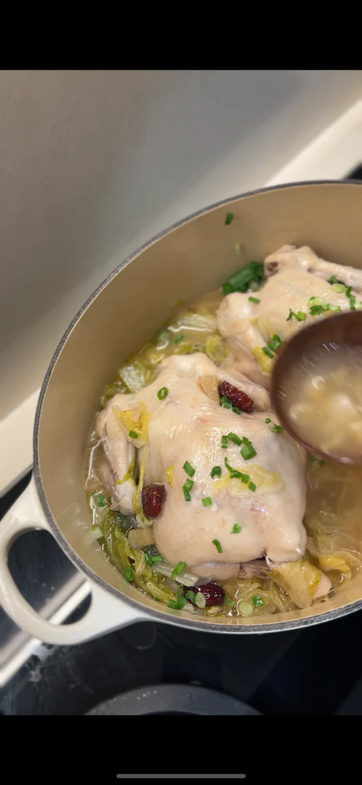

Waterless Chicken Soup

Description
Viral homely chicken soup that relies on the water and juices stored in the ingredients to create a soup without water.
Ingredients
- 2 mini whole chickens (about 800g each)
- 1/2 head napa cabbage (aka wombok or wa wa chye), chopped
- 1 apple, chopped
- 1 onion, sliced
- 3 red dates (jujubes), seeds removed, sliced in half
- 3 slices fresh ginger
- 1 teaspoon salt
- Spring onion, sliced (for garnish)
Instructions
- Place the onion, apple, napa cabbage, red dates, ginger and salt into a heavy-bottomed pot. Place chickens on top of vegetables.
- Cover tightly with the lid.
- Stovetop method: Simmer gently over low heat for 60 minutes.
- Pressure cooker / Instant Pot: Cook on high pressure for 20 minutes. (For Ninja & Instantpot, you might have to add 1 cup of water for pressure to start)
- Once cooked, turn off the heat. Garnish with sliced spring onion and serve hot.
Return to Homepage
More information here